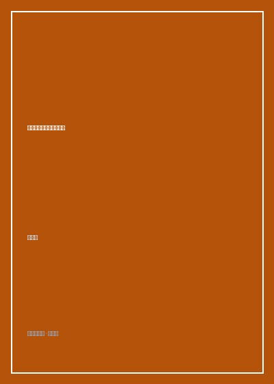

《沉默时，请大声朗读情书》

总体观点
梁彦增的文字具有极其罕见的底层诗意与烈酒般的浓度。他生长于东北老工业基地转型阵痛的腹地，笔下那些下岗老工人、街头浪子与录像厅盲流，既有被时代车轮抛下的沉重创伤，又保持着令人动容的幽默自尊。
全书以荒诞戏谑包裹着深不见底的真挚情感。脱口秀舞台上的自嘲段子，在落盘为文字后化作直击内心的长叹：搞笑从来不是目的，而是普通人在荒凉现实中不致溺水的一块浮木。
在人情日渐冷漠与功利至上的都市节奏中，大声朗读一封写给生活、爱人与故乡的笨拙情书，是对虚无主义最浪漫而决绝的反击。
核心观点
-
1. 铁锈与酒精的底层诗意：为时代弃儿立传
东北衰退不仅是宏观经济数据，更是具体父亲手中生锈的扳手、冬夜烧烤摊前劣质白酒与刺骨寒风中的一声叹息。
描写下岗多年的三舅在简陋修车铺里，借着昏黄灯泡给收音机换零件，收音机滋滋作响时老人眼神里闪过的青年神采。 -
2. 录像厅里的造梦庇护所：青春荷尔蒙的粗粝温床
九十年代昏暗狭窄的录像厅是小镇青年对抗现实平庸与窒息的诺亚方舟，盗版香港武侠片哺育了最初的正义与浪漫想象。
少年们逃学挤在一张掉皮的皮沙发上，烟雾缭绕中看着周润发披风开火，那一刻破败的县城仿佛拥有了无尽的江湖豪气。 -
3. 自嘲作为生存铠甲：在脱口秀幕后打捞尊严
幽默是苦难在心智中发酵后的自救良方，敢于将自身的尴尬、窘迫与贫穷编成段子，本质上是在用笑声夺回对命运的主导权。
北漂住在终年不见阳光的半地下室，作者把漏水的水管戏称为'全自动室内威尼斯水系'，逗笑台下观众也安慰了自己。 -
4. 笨拙的深情胜过精致的算计：现代情感的除魅
在算法配对与功利衡量泛滥的今天，那些不计回报、充满傻气、愿意为对方在风雪中伫立三小时的笨拙才是爱情的原貌。
记录年轻工友为了给心仪女孩买一盒巧克力，连续一个月在零下二十度清晨替人扫雪攒钱的纯粹往事。 -
5. 在沉默深处守住声音：文字作为抵抗遗忘的堤坝
时代的大喇叭往往只播放胜利者的凯歌，文学的职责是把耳朵贴在冰冷地面，记录那些在夜里悄然落下的平凡泪滴。
作者写下'如果有一天整个世界都陷入了巨大的沉默，请你站在废墟最高处，替所有委屈的人大声读出这封情书'。
全书结构
-
辑一 故乡的余温：铁西区的冬日烟囱与老友重逢
记录重返东北工业故里的见闻，在废弃厂房、老式大杂院与老同学聚餐中打捞消逝的工人阶级共同体温情。
老烟囱在铅灰色天空下伫立，当年意气风发的厂办子弟如今大多成了外卖骑手与出租车司机，酒过三巡相视无言。 -
辑二 录像厅里的黄金时代：盗版港片与青春期的荷尔蒙躁动
以回忆长镜头还原世纪之交县城录像厅的边缘生态，记录少年时代的义气、初恋的萌动与对广阔世界的迷惘向往。
录像机磁头磨损导致屏幕闪烁雪花，整个大厅的少年却屏息凝神等待英雄归来，那是匮乏年代最奢侈的精神盛宴。 -
辑三 漂泊者的情书：在地下室写给未知爱人的碎碎念
展现北漂青年在出租屋、排练室与地铁末班车上的漂浮状态，用近乎私人日记的细腻笔调倾诉孤独与渴望。
深夜收工后坐在马路牙子上，给远方不知是否存在的知己写信，写下天上的月亮如何穿透雾霾落在脏球鞋上。 -
辑四 荒诞人间的段子手：脱口秀幕后的自嘲与眼泪
揭秘脱口秀行业聚光灯背后的残酷创作机制，探讨喜剧创作者如何将个人的心理伤疤剥开晾晒给看客解闷的职业宿命。
在开放麦后台改稿改到干呕，上台五分钟收获满堂大笑后，一个人提着道具包在冷风里吃一碗六块钱的热汤面。 -
辑五 沉入暗夜的告白：在沉默时刻大声呼喊爱与尊严
全书压轴情感高潮，将个人叙事升华为对所有在时代边缘苦苦挣扎的普通劳动者的深情致敬与精神拥抱。
作者站在天桥俯瞰川流不息的车灯长河，发出坚定呼喊：哪怕我们一生普通，我们爱过的痕迹也绝不会随风抹去。 -
跋：写给所有在寒夜里独行的笨拙灵魂
总结全书创作初衷，寄语读者在疲惫的生活中守护内心的柔软与滚烫，不要被世俗的冷漠吞噬。
作者写道：'愿你手中有酒，眼里有光，心头永远留着一团吹不熄的火苗'。